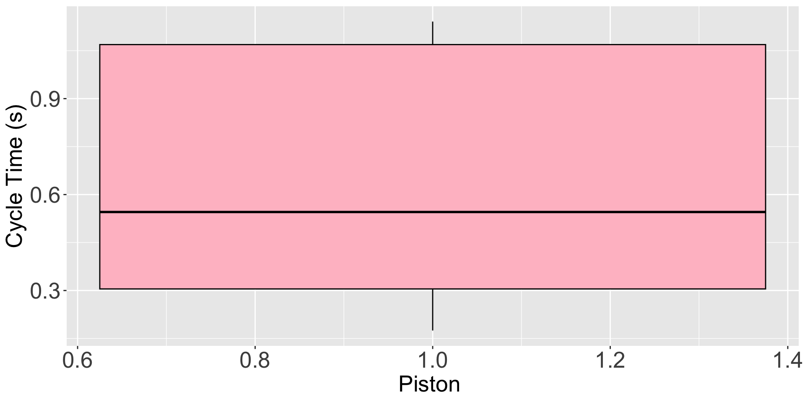
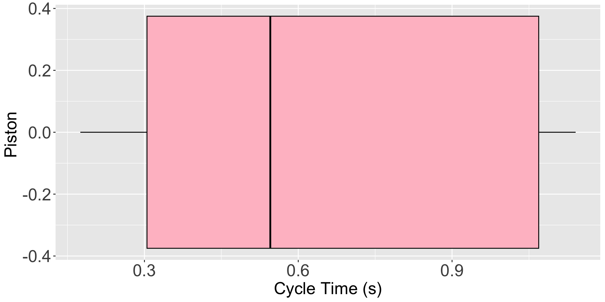
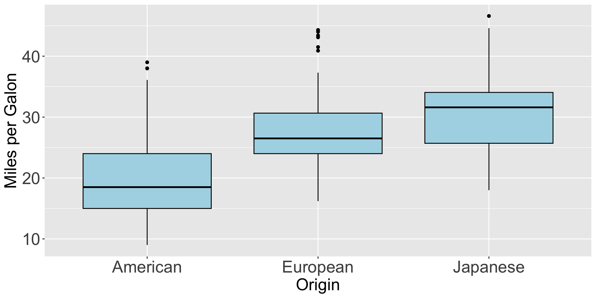
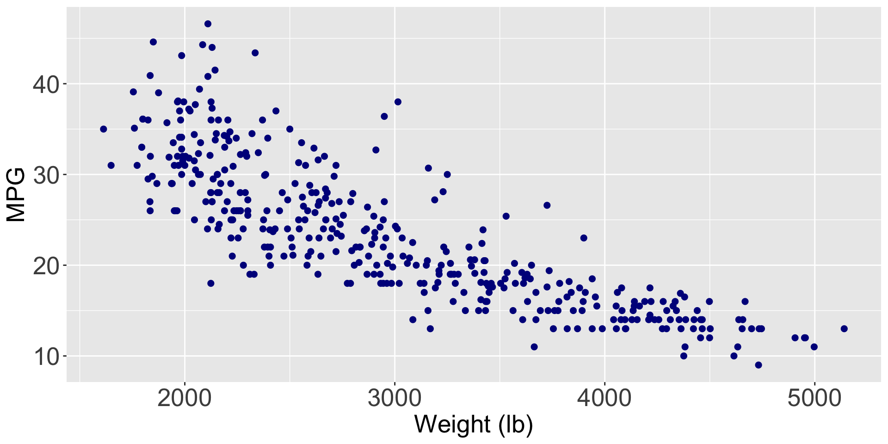
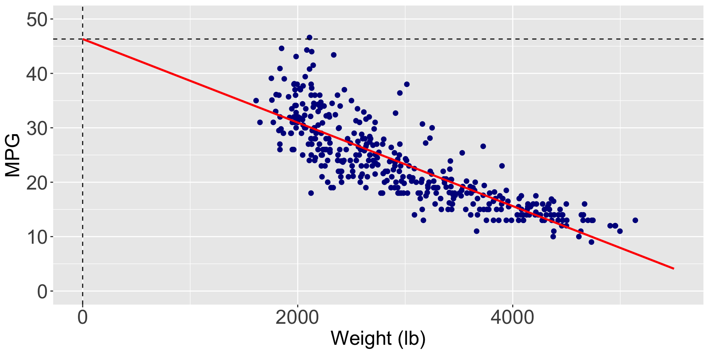
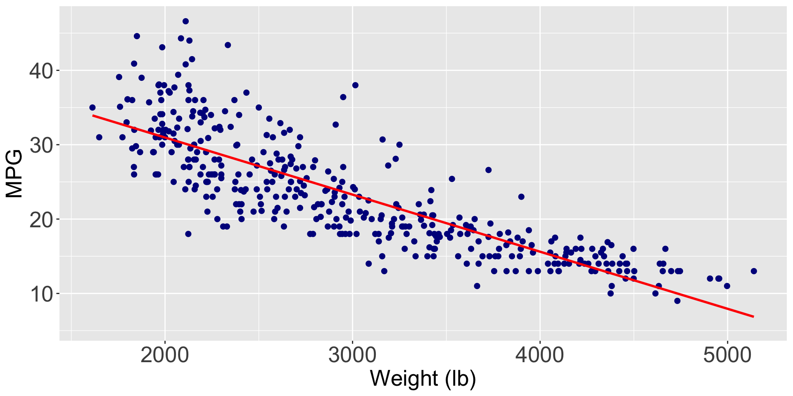
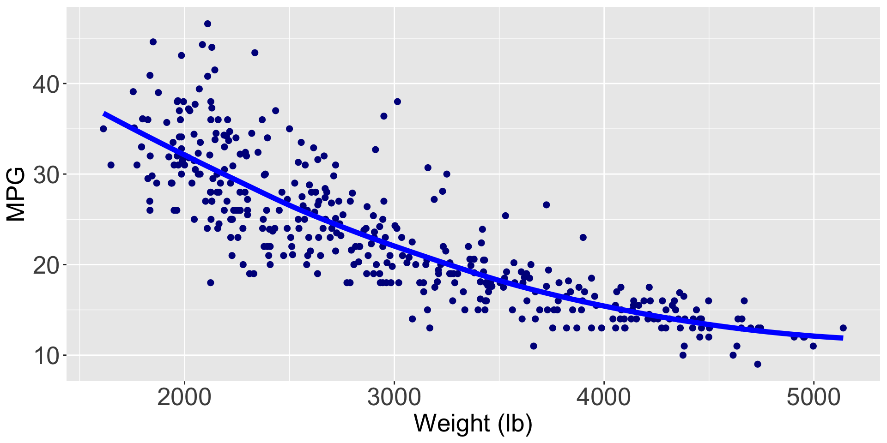
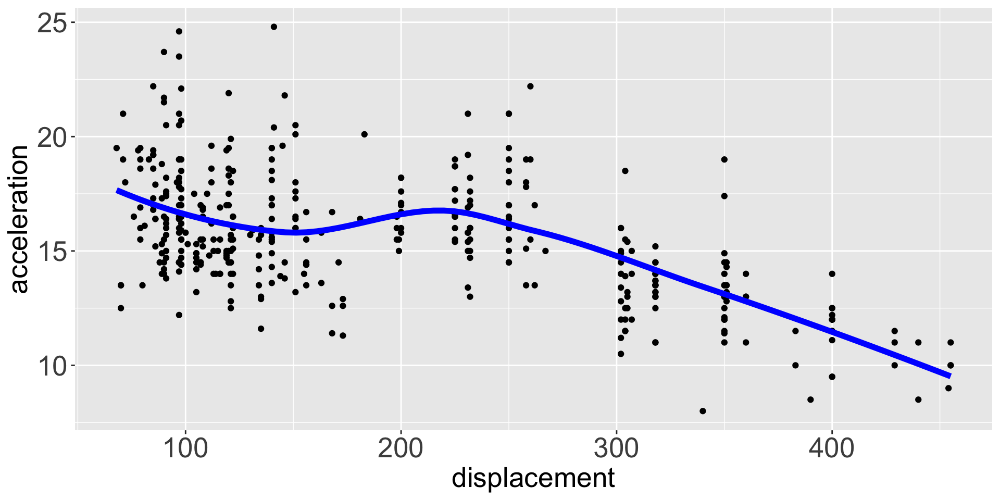
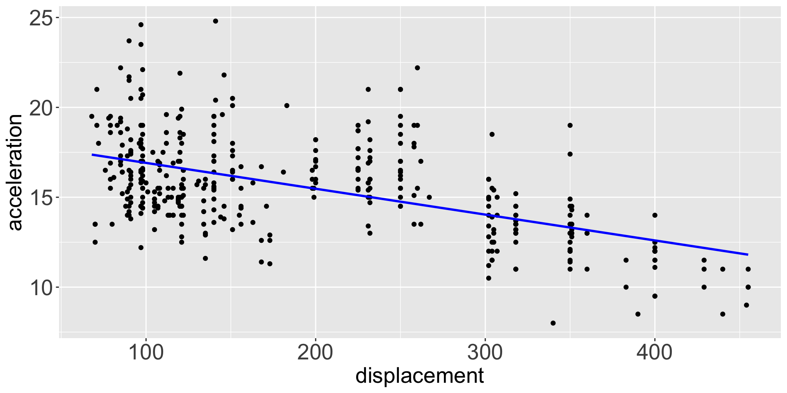

# A tibble: 6 × 9
mpg cylinders displacement horsepower weight acceleration year origin
<dbl> <dbl> <dbl> <chr> <dbl> <dbl> <dbl> <chr>
1 18 8 307 130 3504 12 70 American
2 15 8 350 165 3693 11.5 70 American
3 18 8 318 150 3436 11 70 American
4 16 8 304 150 3433 12 70 American
5 17 8 302 140 3449 10.5 70 American
6 15 8 429 198 4341 10 70 American
# ℹ 1 more variable: `car name` <chr>Statistical Graphs for Multiple Variables
IN2039: Data Visualization for Decision Making
Alan R. Vazquez
Department of Industrial Engineering
Agenda
One Numerical Variable
Multiple Variables
- Side-by-Side Box Plots
- Regression Plots
One Numerical Variable
Example 1
A piston is a mechanical device found in most engines.

One measure of a piston’s performance is the time it takes to complete a cycle, which we call “cycle time” and is measured in seconds.
The file “CYLT.xlsx” contains 50 cycle times of a piston operating under fixed conditions.
Summary statistic
Helps us to summarize a list of observations in a simple way.
For numerical data, the most popular summary statistics are:
- Mean
- Variance and standard deviation
- Quartiles
- Maximum and minimum
Mean
Indicates the center of the data.
Let \(y_1, y_2, \ldots, y_n\) be an observed sample of size \(n\).
The mean is
\[\bar{y} = \frac{1}{n}\sum_{i=1}^{n} y_i = \frac{y_1 + y_2 + \cdots + y_n}{n}.\]
Variance
Indicates how spread out the data are around the mean.
Let \(y_1, y_2, \ldots, y_n\) be an observed sample of size \(n\). The variance is
\[ s^2 = \frac{1}{n-1} \sum_{i=1}^{n} (y_i - \bar{y})^2 = \frac{(y_1 - \bar{y})^2 + \cdots + (y_n - \bar{y})^2}{n-1} \]
The variance is like an average of the squared differences between each observation and the mean.
Standard deviation
A drawback of the variance is that it is not on the same scale as the actual observations.
To obtain a measure of spread whose units are the same as those of the sample, we simply take the squared root of the variance
\[ s = \left(\frac{1}{n-1} \sum_{i=1}^{n} (y_i - \bar{y})^2 \right)^{1/2} \]
This quantity is known as the standard deviation. It is in the same units as the observations.
For the piston data
- The average of the cycle time of the piston is 0.652 seconds.
The standard deviation of the cycle time of the piston is 0.373 seconds.
Therefore, on average, a piston takes 0.652 seconds to complete a cycle, with a variation of \(\pm\) 0.373 seconds.
Quartiles
The median is the middle number of the ordered data values.
Quartiles divide the data as nearly as possible into quarters:
First quartile (\(Q_1\)) is the median of the lower half of the data.
Second quartile (\(Q_2\)) is the median of the data.
Third quartile (\(Q_3\)) is the median of the upper half of the data.

The generalization of quartiles are percentiles or quantiles.
For the piston data
\(Q_1 = 0.305\). So, 25% of cycle times are below 0.305 seconds.
\(Q_2 = 0.546\). So, 50% of cycle times are below 0.546 seconds.
\(Q_3 = 1.07\). So, 75% of cycle times are below 1.07 seconds.
The maximum cycle time is 1.14 seconds.
The minimum cycle time is 0.175 seconds.
Mean vs. Median
The mean and median estimate the central value of the data in different ways.
The mean is the sum of the values divided by the total.
The median is the central value of an ordered set of data.
When do we use the mean?
The mean is used when the data is symmetrically or evenly distributed and there are no significant outliers.
For example, the height of a large sample of people in a homogeneous population.
When do we use the median?
The median is used when there are outliers that could skew the mean.
For example:
Annual household income in a country (where there are a few billionaires who distort the mean).
House prices in a city (where a few very expensive properties can inflate the mean).
Activity (solo mode) Part 1
A company that manufactures capacitor retaining bolts for automobile engines implemented a quality control system. As part of this quality control system, a team of engineers decided to record the number of nonconforming bolts produced each shift.
The file bolts.xlsx contains the number of non-conforming bolts during the last 45 shifts.
- Calculate and interpret the mean, variance, standard deviation, quartiles, minimum and maximum.
Boxplot
A boxplot helps us visualize the distribution of observations using quartiles.
It is very effective for detecting “outliers.”
An important component of the boxplot is the interquartile range (IQR), which is the difference between the third quartile and the first quartile (\(Q_3 - Q_1\)).
The interquartile range is the distance needed to encompass the middle half of the data.
Anatomy of a Box Plot

Learn more here https://builtin.com/articles/1-5-iqr-rule
Outliers
Outliers are points that are much larger or smaller than the rest of the sample points.
Outliers may be data entry errors or they may be points that really are different from the rest.
Outliers should not be deleted without considerable thought—sometimes calculations and analyses will be done with and without outliers and then compared.
Boxplot for the piston data
Usually, the box plot is shown vertically.

But in some cases, we may want to display the the box plot horizontally.

Multiple Variables
Multivariate data
Multivariate data consists of datasets that contain observations of two or more variables.
Variables can be numerical or categorical.
Variables may or may not depend on each other.
In fact, the goal is to determine whether there is a relationship between the variables and the type of relationship.
Example 2
Consider data from 392 cars, including miles per gallon, number of cylinders, horsepower, weight, acceleration, year, origin, among other variables. The data is in the file “auto_dataset.xlsx”.
Principle 1: Define the question
In the context of multiple-variable data, typical questions to study include:
How are variable \(X\) and variable \(Y\) related?
Is the distribution of variable \(X\) the same across all subgroups defined by variable \(Z\)?
Are there any unusual observations in the combination of values for variables \(X\) and \(Y\)?
Are there any unusual observations in \(X\) for a subgroup of variable \(Z\)?
Principle 2: Turn data into information
There are various types of graphs that help us explore relationships between two or more variables.
| Type | Graph Type |
|---|---|
| Numerical | Regression plot |
| Mixed | Side-by-side box plot |
Independent and dependent variables
When investigating the relationship between two variables (numerical or categorical), we use specific terminology.
One variable is called the dependent or response variable, denoted by the letter \(Y\).
The other variable is called the independent or predictor variable, denoted by the letter \(X\).
Our goal is to determine whether changes in \(X\) are associated with changes in \(Y\), and the nature of this association.
Categorical and Numerical Variables
To examine the relationship between a numerical and a categorical variable, we use the categorical variable to divide the data into groups. This way, we compare the distribution of the numerical variable among these groups.
In this context:
- \(X\) is the categorical variable.
- \(Y\) is the numerical variable.
The side-by-side boxplot is the most effective way to study the relationship between a categorical and a numerical variable.
Boxplot by groups
The side-by-side boxplot compares the distribution of a variable across different groups.
For example, if we want to compare the distributions of miles per gallon of cars built in America, Europe, or Japan, we use the following command:

Regression Plots
Questions we can answer with simple linear regression:
Is there a relationship between a response variable and predictors?
How strong is the relationship?
What is the uncertainty?
How precisely can we predict a future outcome?
Is there a relationship between a car’s weight and its miles per gallon?

Regression problem
Objetive: Find the best function \(f(X)\) of the predictor \(X\) that describes the response \(Y\).
Mathematically, we want to establish the following relationship:
\[ Y = f(X) + \epsilon, \]
where \(\epsilon\) is a natural (random) error.
- In practice, it is very difficult to know the true structure of the function \(f(X)\).
The best we can do is construct an approximation (function) \(\hat{f}(X)\).
There are several strategies to build \(\hat{f}(X)\), one of the most common is:
- Define a simple “structure” or “formula.”
- Estimate the elements of the “formula” using the data.
Linear regression model
A very common function \(f(X)\) to predict a response \(Y\) is the linear regression model.
Its mathematical form is:
\[ \hat{Y}_i = \hat{\beta}_0 + \hat{\beta}_1 X_i, \]
- Where \(i\) is the index of the \(n\) observations, and
- \(\hat{Y}_i\) is the predicted value of the actual response \(Y_i\) associated with a predictor value \(X_i\).
- The values \(\hat{\beta}_0\) and \(\hat{\beta}_1\) are called coefficients of the model.
Principle 2: Turn data into information
The values of \(\hat{\beta}_0\) and \(\hat{\beta}_1\) are obtained using the data. Specifically, the formulas for the coefficients are:
\[\hat{\beta}_1 = \frac{ \sum_{i=1}^{n} (Y_i - \bar{Y}) (X_i - \bar{X}) }{\sum_{i=1}^{n} (X_i - \bar{X})^2} \text{ y } \hat{\beta}_0 = \bar{Y} - \hat{\beta}_1 \bar{X},\]
where \(\bar{X} = \sum_{i=1}^n X_i/n\) and \(\bar{Y} = \sum_{i=1}^n Y_i/n\).
These formulas are derived from the method of least squares.
For our example
\(\hat{Y}_i = 46.32 -0.0076 X_i\)

The formula
\(\text{mpg}_i = 46.32 - 0.0076 \times \text{weight}_i\)

Interpretation of the coefficients
What does \(\hat{\beta}_0 = 46.32\) mean?
\(\hat{\beta}_0\) is the average response value when \(X_i = 0\).

Does \(\hat{\beta}_0 = 46.32\) make sense?

No! Because there are no cars with a weight of 0.
What does \(\hat{\beta}_1 = - 0.0076\) mean?
\(\hat{\beta}_1\) is the average change in the response when \(X_i\) increases by one unit.

Interpretation of \(\hat{\beta}_1\)
For every extra pound in a car’s weight, the car has an average reduction of 0.0076 miles per gallon.
Do all points fall exactly on the line?
No! The model has errors.
Technically, the error of the i-th observation is given by: \(\hat{e}_i = Y_i - \hat{Y}_i = Y_i - \hat{\beta}_0 - \hat{\beta}_1 X_i\).
The behavior of the errors (\(e_i\)’s) indicates whether the model is correct or not, which can be validated using a residual analysis (see IN1002B for example).
Local regression
This is a modern alternative to the simple linear regression model for capturing complex relationships between two variables.
Basic Idea: It fits linear regression models to small subsets of the data. These subsets consist of observations that are close to each other.
The most common method for fitting a local regression model is LOESS. We will omit the details of this method here since they require advanced statistical concepts.
For our example

Another example
Let’s consider the relationship between car acceleration and the total volume of all engine cylinders.

Linear regression

Discussion
The simple linear regression model is easy to interpret due to its structure: \(\hat{Y}_i = \hat{\beta}_0 + \hat{\beta}_1 X_i.\)
However, it may be too rigid to capture complex relationships between two variables.
Local regression is flexible and allows capturing complex relationships between two variables, but it has a low level of interpretability because it does not provide an explicit equation.
Return to main page

Tecnologico de Monterrey